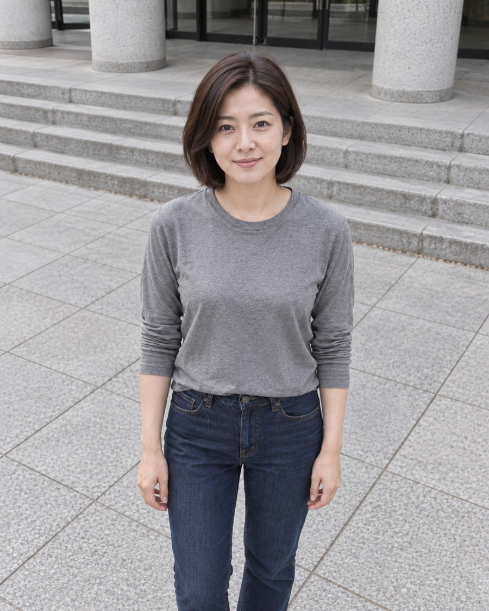
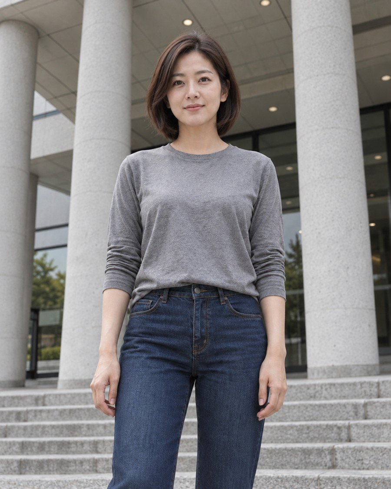
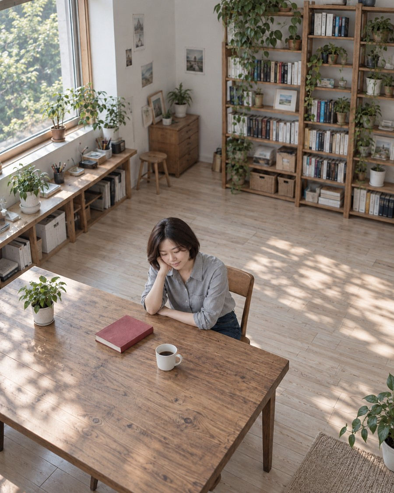

공간 관계를 설명하는 재구성도입니다. 그림에서 실제 촬영 높이·각도·거리·조리개를 측정하지 마세요. 더치 앵글은 아래 G04의 정면 프레임 도식에서 따로 표시합니다.
카메라 높이와 렌즈 방향을 함께 읽기
카메라 앵글은 카메라가 인물을 어디에서 바라보는지 설명한다. 눈높이에서는 인물의 눈과 카메라 높이를 비슷하게 맞춘다. 하이 앵글에서는 카메라를 올린 뒤 인물을 향해 아래로 기울인다. 로우 앵글에서는 카메라를 낮춘 뒤 위로 향한다.
카메라의 높이와 기울기는 서로 다른 조건이다. 더치 앵글은 화면 축을 옆으로 돌리는 롤이며, 위아래 시점과 구분한다. 아래 사진에서는 머리 윗면, 턱 아래, 계단선의 변화를 비교한다. 시점이 주는 감정은 표정과 맥락에 따라 달라질 수 있다.
G01 · AI 생성
눈높이
카메라와 눈의 높이를 맞춘다.
상대 배치 · 실측 아님
눈높이와 수평 계단선이 읽힌다.
엑셀에서는
XLSX_02_0126 · 눈높이 앵글 피사체와 대등한 높이. 가장 자연스럽고 안정적인 시점.
장면 적용·실제 프롬프트·외부 근거
세로 4:5 사진 한 장. 30대 성인 한국인 여성, 턱 아래 길이의 짙은 갈색 머리, 장식 없는 회색 면 셔츠와 진청 바지. 과장 없는 자연스러운 표정과 실제적인 피부. 글자·로고·콜라주·워터마크 없음. 낮은 콘크리트 계단과 수직 기둥이 있는 건물 입구. 인물이 계단 앞의 평평한 바닥에 서서 양팔을 자연스럽게 내리고 정면을 바라본다. 흐린 낮의 부드러운 빛. 눈높이에서 수평으로 촬영한 무릎 위 사진. 인물과 계단·기둥 모두 비교적 선명한 깊은 심도.
추가 편집 설계: 카메라 높이·기울기 / 대등함·친근함을 탐색
G02 · AI 참조 편집
하이 앵글

카메라를 올리고 아래로 향한다.
상대 배치 · 실측 아님
머리 윗면과 바닥 노출이 늘었다. 시선과 화면 크기도 조금 달라졌다.
엑셀에서는
XLSX_02_0436 · 하이 앵글 높은 위치에서 피사체를 내려다보는 앵글.
장면 적용·실제 프롬프트·외부 근거
첨부 기준 이미지를 편집한다. 인물 정체성·의상·사물·장소·표정은 최대한 유지한다. 글자나 추가 인물을 만들지 않는다. 카메라를 인물의 눈보다 높은 위치로 이동해 아래를 내려다본다. 인물의 화면 크기는 무릎 위로 비슷하게 유지한다. 머리 윗면과 바닥이 더 보이게 한다. 화면은 수평이다. 부드러운 낮빛·중립 색감·깊은 심도는 유지한다.
추가 편집 설계: 높이 또는 롤 / 위압·취약·긴장감은 맥락에 따라 다름
G03 · AI 참조 편집
로우 앵글

카메라를 내리고 위로 향한다.
상대 배치 · 실측 아님
천장·기둥 위쪽과 턱 아래가 더 보인다.
엑셀에서는
XLSX_02_0179 · 로우 앵글 낮은 위치에서 피사체를 올려다보는 앵글.
장면 적용·실제 프롬프트·외부 근거
첨부 기준 이미지를 편집한다. 인물 정체성·의상·사물·장소·표정은 최대한 유지한다. 글자나 추가 인물을 만들지 않는다. 카메라를 인물 허리보다 낮은 위치로 이동해 위를 올려다본다. 무릎 위 인물 크기를 유지하고 기둥의 위쪽이 더 보이게 한다. 카메라의 좌우 기울기는 없다. 부드러운 낮빛·중립 색감·깊은 심도는 유지한다.
첨부 기준 이미지를 편집한다. 인물 정체성·의상·사물·장소·표정은 최대한 유지한다. 글자나 추가 인물을 만들지 않는다. 눈높이 카메라 위치와 피사체 크기를 유지하되 카메라 롤만 약 15도 기울인 것처럼 표현한다. 계단 수평선과 기둥이 함께 기울어야 한다. 인물의 몸 자체를 비트는 동작은 추가하지 않는다. 부드러운 낮빛·중립 색감·깊은 심도는 유지한다.
공간 관계를 설명하는 재구성도입니다. 그림에서 실제 촬영 높이·각도·거리·조리개를 측정하지 마세요. 파란 영역은 시야 또는 선명 범위의 개념적 표시입니다.
초점을 맞춘 위치와 선명한 범위를 구분하기
초점은 가장 선명하게 보이도록 맞춘 위치다. 심도는 초점 앞뒤에서 선명하다고 받아들일 수 있는 범위다. 이 장면에서는 눈을 기준으로 컵과 책장이 얼마나 읽히는지 비교한다. 얕은 심도는 얼굴에 집중하게 하고, 깊은 심도는 공간의 정보를 함께 보여줄 수 있다.
실제 촬영에서는 조리개, 초점거리, 촬영 거리와 출력 조건이 심도에 함께 관여한다. 배경과 인물 사이 거리도 배경 흐림에 영향을 준다. 파란 띠는 선명 범위를 단순화한 표시이며, 실제 경계는 점진적으로 흐려진다. 이 AI 결과만으로 실제 조리개 값을 역산할 수는 없다.
D01 · AI 참조 편집
얕은 심도
눈 부근의 좁은 선명 범위
상대 배치 · 실측 아님
눈과 얼굴은 선명하고 컵·책장 흐림이 뚜렷하다.
엑셀에서는
XLSX_08_0065 · 얕은 피사계 심도 주 피사체는 선명하고 전경 또는 후경이 의도적으로 흐릿하게 처리됨.
장면 적용·실제 프롬프트·외부 근거
첨부 기준 이미지를 편집한다. 인물 정체성·의상·사물·장소·표정은 최대한 유지한다. 글자나 추가 인물을 만들지 않는다. 초점은 눈에만 정확히 맞추고, 앞쪽 컵과 뒤쪽 식물·책장을 크게 흐린다. 눈과 가까운 얼굴은 선명해야 한다. 사물의 위치·형태는 바꾸지 않는다. 노출과 색감·시점은 기준과 같게 유지한다.
추가 편집 설계: 선명한 범위 / 얕음=집중, 깊음=맥락이라는 해석을 검토
D02 · AI 생성
중간 심도
전경과 인물을 포함하는 중간 범위
상대 배치 · 실측 아님
컵과 배경이 약간 부드럽지만 종류가 읽힌다.
엑셀에서는
XLSX_08_0038 · 선명도/흐림 대비 초점이 맞은 영역과 흐릿한 영역을 극적으로 대비시켜 특정 요소에 시선을 집중시킴.
장면 적용·실제 프롬프트·외부 근거
세로 4:5 사진 한 장. 30대 성인 한국인 여성, 턱 아래 길이의 짙은 갈색 머리, 장식 없는 회색 면 셔츠와 진청 바지. 과장 없는 자연스러운 표정과 실제적인 피부. 글자·로고·콜라주·워터마크 없음. 작은 창가 작업실의 나무 테이블에 앉은 인물. 흰 도자기 컵은 카메라에서 약 1m 앞쪽, 눈은 약 2m, 뒤의 책장은 약 4m에 있는 구성을 표현한다. 왼쪽 창문에서 부드러운 낮빛이 들어온다. 테이블 위에는 붉은 표지의 무문자 책, 뒤 책장에는 초록 식물이 있다. 눈높이 고정 시점, 인물의 허리 위와 앞쪽 컵, 뒤쪽 책장이 모두 보인다. 컵과 눈과 책장은 서로 겹쳐 가리지 않는다. 중립적인 색과 균형 잡힌 노출. 눈에 정확히 초점을 맞춘다. 얼굴과 몸은 선명하고 앞쪽 컵은 약간 부드러우나 모양이 분명하며, 뒤쪽 식물과 책장은 중간 정도로 흐리지만 사물 종류가 읽힌다. 모든 것을 흐리는 소프트 포커스나 피부 보정은 하지 않는다.
추가 편집 설계: 초점이 선명한 범위 / 행동과 관계 설명
중간 심도는 편집한 교육 분류이며 독립적인 원문 정의가 아님
D03 · AI 참조 편집
깊은 심도
전경부터 배경까지 넓은 범위
상대 배치 · 실측 아님
컵의 테두리·손잡이와 책장까지 선명해졌다. 보완 과정에서 색·옷 디테일도 변해 완전한 단일요인 통제는 아니다.
엑셀에서는
XLSX_08_0020 · 깊은 피사계 심도 화면의 전경, 중경, 후경 모두가 선명하게 초점이 맞추어진 상태임.
장면 적용·실제 프롬프트·외부 근거
첨부 기준 이미지를 편집한다. 인물 정체성·의상·사물·장소·표정은 최대한 유지한다. 글자나 추가 인물을 만들지 않는다. 인물의 눈과 앞쪽 컵, 뒤쪽 식물·책장까지 모두 읽을 수 있는 선명한 범위로 넓힌다. 전경·중경·후경의 디테일을 유지하되 디지털 윤곽선 강조를 하지 않는다. 노출과 색감·시점은 기준과 같게 유지한다.
피부 → 컵의 그늘 면 → 붉은 책 → 초록 잎 순서입니다. 같은 위치의 작은 영역을 평균낸 RGB 견본입니다.
K01 중립 기준
피부#d9b09e
흰 컵#c9b6ab
붉은 책#681e1f
초록 잎#5e6b3c
K02 따뜻함 · 낮은 대비
피부#e0b29b
흰 컵#e7c4a9
붉은 책#782822
초록 잎#8c823d
K03 차가움 · 낮은 채도
피부#c9aca5
흰 컵#c5bfc1
붉은 책#5a2b2d
초록 잎#6b7a5f
K04 선명한 색 · 높은 채도
피부#e2b5a3
흰 컵#eed1bb
붉은 책#8f0411
초록 잎#5e751c
임의의 예시색이 아니라 현재 생성본에서 추출했습니다. 같은 좌표라도 AI 편집의 작은 위치 변화가 섞일 수 있습니다. 색차 실측·필름 보정표가 아닙니다.
색의 변화를 구도와 분리해서 관찰하기
색을 비교할 때는 피부, 흰 컵, 붉은 책, 초록 식물을 차례로 살펴본다. 따뜻한 색과 차가운 색은 분위기를 다르게 해석하게 할 수 있다. 채도는 색의 강도이고, 대비는 밝고 어두운 부분의 차이다. 세 요소를 구분하면 무엇이 느낌을 바꿨는지 설명하기 쉽다.
이 보드에서는 카메라 위치와 심도를 유지하도록 요청했다. 그러나 AI 편집은 광원이나 피부 표현도 함께 바꿀 수 있다. 색의 변화와 조명의 변화를 따로 기록한다. 따뜻함을 친밀함의 정답으로 연결하지 말고 장면에서 근거를 찾는다.
K01 · AI 참조 편집
중립
중립에 가까운 기준 색. 색을 안 바꾸라는 편집도 완전히 동일한 픽셀을 보장하지 않는다.
엑셀에서는
XLSX_06_0290 · Leica Natural Color 자연스러운 톤 밸런스 따뜻한 콘트라스트
장면 적용·실제 프롬프트·외부 근거
첨부 기준 이미지를 편집한다. 인물 정체성·의상·사물·장소·표정은 최대한 유지한다. 글자나 추가 인물을 만들지 않는다. 색과 톤만 바꾼다. 구도·초점 범위·사물 위치를 유지한다. 색을 중립으로 유지한다. 흰 컵에 강한 노랑·파랑 치우침 없이 실제적인 피부색과 중간 채도, 완만한 대비를 표현한다.
추가 편집 설계: 색과 명암 / 친밀·고독·활력은 고정 정답이 아닌 해석
K02 · AI 참조 편집
따뜻한 저대비
목재와 피부가 따뜻해지고 대비가 완만해졌다.
엑셀에서는
XLSX_01_0032 · 필름 질감 따뜻한 그림자, 부드러운 그레인, 클래식한 콘트라스트
장면 적용·실제 프롬프트·외부 근거
첨부 기준 이미지를 편집한다. 인물 정체성·의상·사물·장소·표정은 최대한 유지한다. 글자나 추가 인물을 만들지 않는다. 색과 톤만 바꾼다. 구도·초점 범위·사물 위치를 유지한다. 전체 색을 은은하게 따뜻하게 하고 명암 대비와 채도를 조금 낮춘다. 밝은 피부 디테일과 컵의 재질은 남긴다. 과도한 주황색 피부나 갈색 단색 필터는 피한다.
추가 편집 설계: 색과 명암 / 친밀·고독·활력은 고정 정답이 아닌 해석
K03 · AI 참조 편집
차가운 저채도
전체가 차갑고 낮은 채도로 바뀌었다.
엑셀에서는
XLSX_08_0064 · 차가운 필터 푸른색 계열 강조, 차분하고 감성적인 느낌.
장면 적용·실제 프롬프트·외부 근거
첨부 기준 이미지를 편집한다. 인물 정체성·의상·사물·장소·표정은 최대한 유지한다. 글자나 추가 인물을 만들지 않는다. 색과 톤만 바꾼다. 구도·초점 범위·사물 위치를 유지한다. 전체를 약간 차갑고 낮은 채도로 바꾼다. 피부를 완전히 회색이나 청색으로 만들지 말고 적은 색을 남긴다. 명암은 읽히게 한다.
추가 편집 설계: 색과 명암 / 친밀·고독·활력은 고정 정답이 아닌 해석
K04 · AI 참조 편집
선명한 고채도
책의 빨강·식물의 초록이 강해졌다. 피부와 광원도 조금 변했다.
엑셀에서는
XLSX_01_0101 · 고채도 색의 채도를 높게 지정하는 표현.
장면 적용·실제 프롬프트·외부 근거
첨부 기준 이미지를 편집한다. 인물 정체성·의상·사물·장소·표정은 최대한 유지한다. 글자나 추가 인물을 만들지 않는다. 색과 톤만 바꾼다. 구도·초점 범위·사물 위치를 유지한다. 붉은 책과 초록 식물의 채도를 뚜렷하게 높이고 명암 대비도 조금 올린다. 피부의 자연스러움과 흰 컵의 밝은 디테일은 유지한다.
친밀함 장면은 가까운 얼굴, 따뜻한 색, 흐린 배경을 함께 사용한다. 고립 장면은 높은 시점, 작은 인물, 넓은 여백을 결합한다. 존재감 장면은 낮은 시점과 선 자세, 측면광을 함께 사용한다. 카메라 위치와 화면 속 인물 크기를 먼저 읽고, 빛과 심도를 이어서 살펴본다.
이 비교는 여러 조건을 동시에 바꾼 연출 사례다. 따라서 감정의 차이를 앵글 하나의 효과로 설명할 수는 없다. 같은 느낌을 다른 방식으로 만드는 방법도 생각해 본다. 다음 실습에서는 한 조건만 바꾸어 자신의 해석을 확인한다.
M01 · AI 참조 편집
친밀함
가까운 거리와 인물 중심 프레임.
상대 배치 · 실측 아님
가까운 얼굴·따뜻한 톤·흐린 배경을 결합했다.
엑셀에서는
XLSX_02_0126 · 눈높이 앵글 피사체와 대등한 높이. 가장 자연스럽고 안정적인 시점.
XLSX_02_0385 · 약한 미소 볼 미세 상승, 눈가 잔주름 약함, 입꼬리 경미한 상승, 치아 비노출
XLSX_08_0065 · 얕은 피사계 심도 주 피사체는 선명하고 전경 또는 후경이 의도적으로 흐릿하게 처리됨.
장면 적용·실제 프롬프트·외부 근거
첨부 기준 이미지를 편집한다. 인물 정체성·의상·사물·장소·표정은 최대한 유지한다. 글자나 추가 인물을 만들지 않는다. 기준 인물의 얼굴과 어깨를 눈높이에서 가까이 담는다. 부드러운 창문광, 약한 미소, 따뜻하고 완만한 색, 눈에 초점을 맞춘 얕은 심도로 뒤 공간을 흐리게 한다.
추가 편집 설계: 앵글·심도·색·자세 복합 / 복합 조합이므로 단일 요인 효과로 해석하지 않음
M02 · AI 참조 편집
고립감

높은 위치와 넓은 공간.
상대 배치 · 실측 아님
사용자 최종 지시에 따라 기존 구도를 유지하고 밝은 중립 톤만 적용했다. 투시는 재구성하지 않았다.
XLSX_08_0020 · 깊은 피사계 심도 화면의 전경, 중경, 후경 모두가 선명하게 초점이 맞추어진 상태임.
장면 적용·실제 프롬프트·외부 근거
첨부 기준 이미지를 편집한다. 인물 정체성·의상·사물·장소·표정은 최대한 유지한다. 글자나 추가 인물을 만들지 않는다. 카메라를 위쪽으로 옮겨 내려다보는 넓은 구도로 바꾼다. 같은 작업실 속 인물을 작게 두고 빈 테이블·바닥·벽을 넓게 남긴다. 인물은 조용히 아래를 바라보고 차가운 저채도와 깊은 심도로 주변까지 읽히게 한다.
추가 편집 설계: 앵글·심도·색·자세 복합 / 복합 조합이므로 단일 요인 효과로 해석하지 않음
M03 · AI 참조 편집
존재감
낮은 위치에서 위로 바라보기.
상대 배치 · 실측 아님
낮은 시점·선 자세·측면광이 결합됐다. 감정 효과는 주관적이다.
엑셀에서는
XLSX_02_0179 · 로우 앵글 낮은 위치에서 피사체를 올려다보는 앵글.
XLSX_03_0092 · 소프트 사이드라이트 방향성있는 확산광, 입체감 부여
장면 적용·실제 프롬프트·외부 근거
첨부 기준 이미지를 편집한다. 인물 정체성·의상·사물·장소·표정은 최대한 유지한다. 글자나 추가 인물을 만들지 않는다. 기준 인물이 테이블 옆에 선 자세로 바꾼다. 낮은 카메라에서 올려다보며 허리 위를 담고 어깨를 자연스럽게 편다. 편측광의 명암으로 형태를 강조하고, 인물은 선명하며 배경은 중간 정도로 읽히게 한다. 차분한 중립색.
추가 편집 설계: 앵글·심도·색·자세 복합 / 복합 조합이므로 단일 요인 효과로 해석하지 않음
피부가 정교하다는 이유만으로 실제 카메라로 찍은 느낌이 생기지는 않는다. 광원의 방향, 그림자, 손과 사물의 접촉, 초점의 연결을 함께 본다. 장면 전체에서 같은 촬영 조건이 유지되는지 살펴보는 과정이다. 다만 사람의 시각적 인상만으로 실제 사진 여부를 확정할 수는 없다.
실제 사진 칸 R01은 아직 비어 있다. R03은 실제 사진이 아니라 R02의 AI 이미지를 참조한 편집이다. 현재 자료는 생성과 참조 편집의 차이를 관찰하는 예비 사례다. 실제 사진과의 비교는 촬영 설정이 기록된 사진을 추가한 뒤 진행한다.
R01 · 실제 촬영본
실제 사진 미확보
실제 촬영 자료 필요
AI로 대체하지 않았습니다.
모델 동의·촬영 설정·보정 여부를 기록한 작업실 사진을 확보하세요.
현재 자료로 실제 사진과 AI의 촬영감 차이를 검증할 수 없습니다.
R02 · AI 생성
설명으로 생성
손·연필·종이 접촉과 창가 빛을 관찰할 AI 생성 기준본.
엑셀에서는
XLSX_03_0077 · 자연광 / 창문광 부드러운 직사광, 따뜻한 색조, 현실적 질감
XLSX_08_0065 · 얕은 피사계 심도 주 피사체는 선명하고 전경 또는 후경이 의도적으로 흐릿하게 처리됨.
장면 적용·실제 프롬프트·외부 근거
세로 4:5 사진 한 장. 30대 성인 한국인 여성, 턱 아래 길이의 짙은 갈색 머리, 장식 없는 회색 면 셔츠와 진청 바지. 과장 없는 자연스러운 표정과 실제적인 피부. 글자·로고·콜라주·워터마크 없음. 창 하나로 낮빛이 들어오는 실제적인 작은 디자인 작업실. 인물은 낡은 나무 책상에서 노트에 연필로 스케치하던 중 대화 상대 쪽을 잠깐 돌아본다. 오른손은 연필을 잡고 종이에 닿아 있다. 카메라는 테이블 맞은편 눈높이, 가까운 눈에 초점. 반대편 얼굴은 방의 약한 반사광만 받고 뒤 책장은 부드럽게 흐리다. 면 셔츠의 생활 주름, 피부의 작은 색 차이, 책상 위 지우개와 종이의 접촉을 표현한다. 모델 화보 같은 정면 포즈나 균일한 미용 보정 없이 자연스러운 순간.
추가 편집 설계: 입력 방식 / 일상의 순간
실제 촬영본이 아닌 AI 생성 기준 이미지
R03 · AI 참조 편집
AI 기준 이미지 참조
기준과 비슷하지만 머리 윤곽광과 책상 밝기가 변했다. 실제 사진을 입력한 결과가 아니다.
엑셀에서는
XLSX_03_0077 · 자연광 / 창문광 부드러운 직사광, 따뜻한 색조, 현실적 질감
XLSX_08_0065 · 얕은 피사계 심도 주 피사체는 선명하고 전경 또는 후경이 의도적으로 흐릿하게 처리됨.
장면 적용·실제 프롬프트·외부 근거
첨부 기준 이미지를 편집한다. 인물 정체성·의상·사물·장소·표정은 최대한 유지한다. 글자나 추가 인물을 만들지 않는다. 기준 이미지의 장면을 실제 카메라로 찍은 듯한 자연스러운 사진으로 재해석한다. 연필을 쥔 손과 종이의 접촉, 창문 방향에 맞는 얼굴 그림자, 눈 중심의 초점 범위를 유지한다. 피부를 균일하게 정리하거나 모든 부분을 또렷하게 만들지 않는다. 노이즈나 잡티를 과장해 현실감을 흉내 내지 않는다.
실제 카메라의 출력은 기종명 하나로 결정되지 않는다. 렌즈, 노출, 화이트밸런스, 출력 프로파일과 보정이 함께 관여한다. 같은 카메라도 설정에 따라 다른 색을 낼 수 있다. 같은 장면과 출력 조건을 맞춰야 기종의 차이를 비교하기 쉽다.
이 보드는 기종명을 넣었을 때 AI가 어떤 외형을 만드는지 보여준다. 실제 Canon, Fujifilm, Leica로 촬영한 비교가 아니다. 특히 Q03에서는 광원까지 바뀌었다. 따라서 그 그림자를 특정 카메라의 색 특성으로 설명하지 않는다.
Q01 · AI 참조 편집
Canon EOS 5D Mark IV
기준보다 따뜻해 보인다. Canon의 실제 색 성능을 입증하지 않는다.
엑셀에서는
XLSX_04_0014 · EOS 5D Mark IV Deep portrait with natural skin tones captured by Canon EOS 5D Mark IV
장면 적용·실제 프롬프트·외부 근거
첨부 기준 이미지를 편집한다. 인물 정체성·의상·사물·장소·표정은 최대한 유지한다. 글자나 추가 인물을 만들지 않는다. 색 재현만 Canon EOS 5D Mark IV라는 카메라 이름에서 연상되는 사진 표현으로 해석한다. 렌즈 화각·촬영 위치·초점 범위·밝기는 바꾸지 않는다. 특정 색을 과장하라는 추가 지시는 없다. 브랜드 로고나 카메라 물체를 넣지 않는다.
추가 편집 설계: 기종명만 바꾼 AI 색 해석 / 브랜드별 감정 정답을 정하지 않음
기종의 실제 색 재현·성능 비교가 아님. 원문 설명은 검증된 제품 특성으로 취급하지 않음
Q02 · AI 참조 편집
Fujifilm X-T5
Q01과 차이가 작고 대비·색에 미세한 차이가 보인다.
엑셀에서는
XLSX_01_0034 · Fujifilm GFX 100S, X-T5, X100V 필름 사진처럼 깊고 감성적인 색감을 내고, 부드러운 질감 표현이 뛰어납니다.
장면 적용·실제 프롬프트·외부 근거
첨부 기준 이미지를 편집한다. 인물 정체성·의상·사물·장소·표정은 최대한 유지한다. 글자나 추가 인물을 만들지 않는다. 색 재현만 Fujifilm X-T5라는 카메라 이름에서 연상되는 사진 표현으로 해석한다. 렌즈 화각·촬영 위치·초점 범위·밝기는 바꾸지 않는다. 특정 색을 과장하라는 추가 지시는 없다. 브랜드 로고나 카메라 물체를 넣지 않는다.
추가 편집 설계: 기종명만 바꾼 AI 색 해석 / 브랜드별 감정 정답을 정하지 않음
기종의 실제 색 재현·성능 비교가 아님. 원문 설명은 검증된 제품 특성으로 취급하지 않음
Q03 · AI 참조 편집
Leica Q3
색뿐 아니라 강한 햇빛과 그림자가 추가됐다. 기종명만의 색 비교로 사용하기 부적합한 편차다.
엑셀에서는
XLSX_06_0323 · Leica Q3 Premium compact travel camera; Summilux 28mm lens look natural bokeh fine color depth
장면 적용·실제 프롬프트·외부 근거
첨부 기준 이미지를 편집한다. 인물 정체성·의상·사물·장소·표정은 최대한 유지한다. 글자나 추가 인물을 만들지 않는다. 색 재현만 Leica Q3라는 카메라 이름에서 연상되는 사진 표현으로 해석한다. 렌즈 화각·촬영 위치·초점 범위·밝기는 바꾸지 않는다. 특정 색을 과장하라는 추가 지시는 없다. 브랜드 로고나 카메라 물체를 넣지 않는다.
공간 관계를 설명하는 재구성도입니다. 그림에서 실제 촬영 높이·각도·거리·조리개를 측정하지 마세요. 파란 영역은 시야 또는 선명 범위의 개념적 표시입니다.
화각과 촬영 거리를 함께 바꾸면 공간 관계도 달라진다
화각은 카메라가 장면을 담는 각도 범위다. 같은 센서 조건에서는 짧은 초점거리일수록 넓은 범위를 담는다. 인물을 비슷한 크기로 담으려면 광각에서는 가까이, 망원에서는 멀리 이동하는 경우가 많다. 이동에 따라 전경, 인물, 배경의 상대 크기가 달라진다.
원근의 변화는 촬영 위치와 연결해서 설명해야 한다. 같은 위치에서 렌즈만 바꾸는 경우와 뒤로 이동하는 경우를 구분한다. 이 AI 비교에서는 L03의 인물 크기도 달라졌다. 도식은 의도한 관계를 설명하며, 사진이 완벽히 통제됐다는 뜻은 아니다.
L01 · AI 참조 편집
광각·가까운 위치
가까운 위치 · 넓은 화각
상대 배치 · 실측 아님
전경 컵이 커지고 주변 공간이 넓어졌다.
엑셀에서는
XLSX_05_0089 · 광각 렌즈 넓은 시야로 공간감과 배경 요소를 함께 담는 초점대
장면 적용·실제 프롬프트·외부 근거
첨부 기준 이미지를 편집한다. 인물 정체성·의상·사물·장소·표정은 최대한 유지한다. 글자나 추가 인물을 만들지 않는다. 24mm 전후의 광각으로 가까이에서 촬영한 듯 재구성한다. 얼굴 크기는 기준과 비슷하게 유지하되 가까운 컵은 상대적으로 크게 보이고 배경은 작고 멀게 느껴져야 한다. 넓은 주변 공간이 보인다. 얼굴에 초점을 유지하고 배경은 알아볼 수 있는 중간 심도. 노출과 색은 중립으로 유지한다.
추가 편집 설계: 화각과 촬영 거리 함께 / 공간 강조·관계·인물 분리를 탐색
원근 변화는 카메라 위치 변화와 연결됨. AI 예시로 정확한 초점거리 측정 불가
L02 · AI 참조 편집
표준·중간 위치
중간 위치 · 중간 화각
상대 배치 · 실측 아님
기준에 가까운 크기 관계.
엑셀에서는
XLSX_06_0136 · 표준 렌즈 왜곡이 적고 인물 비율이 자연스러운 50mm 전후 초점대
장면 적용·실제 프롬프트·외부 근거
첨부 기준 이미지를 편집한다. 인물 정체성·의상·사물·장소·표정은 최대한 유지한다. 글자나 추가 인물을 만들지 않는다. 50mm 전후의 표준 화각으로 중간 거리에서 촬영한 듯 재구성한다. 얼굴 크기를 기준과 비슷하게 하고, 앞 컵·사람·책장의 크기 관계를 과장하지 않는다. 얼굴에 초점을 유지하고 배경은 알아볼 수 있는 중간 심도. 노출과 색은 중립으로 유지한다.
추가 편집 설계: 화각과 촬영 거리 함께 / 공간 강조·관계·인물 분리를 탐색
원근 변화는 카메라 위치 변화와 연결됨. AI 예시로 정확한 초점거리 측정 불가
L03 · AI 참조 편집
망원·먼 위치
먼 위치 · 좁은 화각
상대 배치 · 실측 아님
컵이 작아지고 배경이 상대적으로 커 보이지만 인물 화면 크기도 작아졌다. 거리·화각의 엄밀한 통제 예시는 아니다.
엑셀에서는
XLSX_06_0106 · 망원 렌즈 원근 압축으로 배경을 붙여 보이며 피사체를 또렷이 분리
장면 적용·실제 프롬프트·외부 근거
첨부 기준 이미지를 편집한다. 인물 정체성·의상·사물·장소·표정은 최대한 유지한다. 글자나 추가 인물을 만들지 않는다. 100mm 전후의 망원으로 카메라를 뒤로 물려 촬영한 듯 재구성한다. 얼굴 크기는 기준과 비슷하게 유지하되 배경 사물은 상대적으로 크고 가까워 보이게 한다. 앞 컵의 크기 과장을 줄이고 배경이 압축되어 보이게 한다. 얼굴에 초점을 유지하고 배경은 알아볼 수 있는 중간 심도. 노출과 색은 중립으로 유지한다.
추가 편집 설계: 화각과 촬영 거리 함께 / 공간 강조·관계·인물 분리를 탐색
원근 변화는 카메라 위치 변화와 연결됨. AI 예시로 정확한 초점거리 측정 불가
바꾸기 / 고정 요청
화각과 촬영 거리 함께 / 인물 화면 크기·빛·색
학생 질문
이미지에서 근거를 찾고, 다른 해석 하나를 제시하세요.
활용과 해석
공간 강조·관계·인물 분리를 탐색
실제 촬영·현상·기능 실행 결과가 아닌 AI 해석이다. 원근 변화는 촬영 위치와 연결된다. 화각만 바꾸고 위치를 고정한 비교가 아니다.
PORTRA, EKTAR, TRI-X는 서로 다른 제품이며, 색과 흑백 표현의 설명도 다르다. 실제 결과는 필름 선택뿐 아니라 노출, 현상, 스캔과 후처리에도 영향을 받는다. 색의 강도, 피부 표현, 입자와 명암을 나누어 관찰한다. 입자가 크다는 이유만으로 필름 사진의 질감을 확정하지 않는다.
현재 이미지는 공식 제품 설명을 AI 편집 지시로 옮긴 사례다. 실제 필름을 현상하거나 스캔한 결과가 아니다. 같은 구도와 심도를 유지하도록 요청했지만, 편집 과정의 변화는 남는다. 실제 필름 비교에서는 촬영과 처리 조건을 함께 기록한다.
실제 필름: 라벨과 촬영 샘플로 다시 읽기
필름 이름을 색 필터 하나로 외우지 않습니다. 먼저 라벨에서 감도와 종류를 확인하고, 실제 사진에서 색·명암·표면의 차이를 관찰합니다. 아래 8종의 순서는 수업 비교 순서이며 판매 순위가 아닙니다.
필름별 게시 분류와 촬영자 자기보고 기준입니다. JPEG·스캔·선명화가 질감에 섞일 수 있어 입자 실측 자료로 사용하지 않습니다.
사진과 라벨의 저작권은 권리자에게 있습니다. 로컬 검토용 수집이며 공개 재배포 허락은 미확인입니다.
36장 원본 픽셀 보기·출처·검토 기록 →
F01 · AI 참조 편집
PORTRA 400 참고
따뜻한 색과 미세한 입자가 나타났다. 실제 필름의 고유 색으로 확정하지 않는다.
엑셀에서는
XLSX_01_0648 · 필름 그레인 필름 특유의 입자감을 더해 아날로그적, 거친 질감 연출.
장면 적용·실제 프롬프트·외부 근거
첨부 기준 이미지를 편집한다. 인물 정체성·의상·사물·장소·표정은 최대한 유지한다. 글자나 추가 인물을 만들지 않는다. 색과 입자 표현만 바꾼다. 자연스러운 피부색과 섬세한 색조를 중심으로 한 Kodak PORTRA 400 참고 표현. 고운 입자와 중간 색 채도, 부드러운 피부의 색 변화. 과장된 빛샘·스크래치·주황 필터 없음.
추가 편집 설계: 필름 이름과 설명 기반 AI 해석 / 피부·색채·기록성 표현의 가능성을 토론
실제 필름 촬영·현상·스캔 결과가 아님. 제품별 이름은 엑셀에 미확보되어 공식 자료로 확장
XLSX_01_0648 · 필름 그레인 필름 특유의 입자감을 더해 아날로그적, 거친 질감 연출.
장면 적용·실제 프롬프트·외부 근거
첨부 기준 이미지를 편집한다. 인물 정체성·의상·사물·장소·표정은 최대한 유지한다. 글자나 추가 인물을 만들지 않는다. 색과 입자 표현만 바꾼다. Kodak EKTAR 100 설명을 참고한 선명한 색과 높은 채도, 매우 고운 입자. 붉은 책과 초록 식물은 풍부한 색이며 피부와 흰 컵의 밝은 디테일은 유지. 빛샘·스크래치 없음.
추가 편집 설계: 필름 이름과 설명 기반 AI 해석 / 피부·색채·기록성 표현의 가능성을 토론
실제 필름 촬영·현상·스캔 결과가 아님. 제품별 이름은 엑셀에 미확보되어 공식 자료로 확장
XLSX_01_0648 · 필름 그레인 필름 특유의 입자감을 더해 아날로그적, 거친 질감 연출.
장면 적용·실제 프롬프트·외부 근거
첨부 기준 이미지를 편집한다. 인물 정체성·의상·사물·장소·표정은 최대한 유지한다. 글자나 추가 인물을 만들지 않는다. 색과 입자 표현만 바꾼다. Kodak TRI-X 400을 참고한 흑백 사진 표현. 색을 없애고 명암·고전적인 입자 구조·선명한 가장자리를 표현하되 인위적인 굵은 노이즈를 덮지 않는다. 눈·옷·배경의 밝기 구분을 유지.
추가 편집 설계: 필름 이름과 설명 기반 AI 해석 / 피부·색채·기록성 표현의 가능성을 토론
실제 필름 촬영·현상·스캔 결과가 아님. 제품별 이름은 엑셀에 미확보되어 공식 자료로 확장
필름 시뮬레이션은 카메라 내부에서 색과 계조를 처리하는 디지털 기능이다. 실제 필름 재료와 같은 범주로 묶지 않는다. PROVIA, CLASSIC CHROME, ACROS의 설명을 색과 명암의 관찰 기준으로 사용한다. 흑백에서는 색 대신 밝기의 분리와 어두운 부분의 정보를 살펴본다.
이 보드에서는 카메라 기능을 실행하지 않고 설명을 AI에 입력했다. 따라서 실제 기능의 정확한 재현으로 판단하지 않는다. F03과 S03의 차이도 이번 생성본 사이의 차이로 해석한다. 수업에서는 제품 설명, 편집 지시, 관찰 결과를 각각 구분해 기록한다.
이 이름은 누가 만들었는가: FUJIFILM의 디지털 기능
세 이름은 후지필름(FUJIFILM Corporation)이 만든 필름 시뮬레이션 기능명입니다. 일반 광학 용어가 아닙니다. 실물 필름, 기본 모드, 사용자 레시피, AI 지시는 서로 다른 종류입니다.
PROVIA
FUJICHROME PROVIA 필름 상표에서 이어진 이름. 디지털 기능은 PROVIA/STANDARD다.
범용 색 재현을 목표로 하며, 기억색과 맑은 색 표현의 의도가 있다. 무보정·색도계적 중립과 같지는 않다.
S01~S03과 구분해서 읽기 기존 AI 이미지는 기능 설명을 입력한 초기 해석입니다. 카메라의 실제 시뮬레이션을 실행하지 않았습니다. 공식 20장과 비교해 피사체별 색과 명암의 차이를 설명합니다.
이름의 유래·기능·공식 샘플 20장 전체 기록 →
S01 · AI 참조 편집
PROVIA 참고
중립적인 색 표현 요청의 AI 결과. 실제 카메라 기능을 실행한 것이 아니다.
엑셀에서는
제품별 정의는 엑셀 미확보. 공식 자료로 확장.
장면 적용·실제 프롬프트·외부 근거
첨부 기준 이미지를 편집한다. 인물 정체성·의상·사물·장소·표정은 최대한 유지한다. 글자나 추가 인물을 만들지 않는다. 색과 톤만 편집한다. 후지필름 PROVIA/STANDARD 설명을 참고해 균형 잡힌 표준 색 재현을 요청한다. 자연스러운 피부색과 중간 채도, 과장 없는 대비.
추가 편집 설계: 디지털 시뮬레이션 설명의 AI 해석 / 제품 기능과 감정 연결은 별도 해석
카메라 내부 기능을 실행한 이미지가 아님. 엑셀의 Leica Classic Chrome은 오류 후보로 사용 배제
첨부 기준 이미지를 편집한다. 인물 정체성·의상·사물·장소·표정은 최대한 유지한다. 글자나 추가 인물을 만들지 않는다. 색과 톤만 편집한다. 후지필름 CLASSIC CHROME 설명을 참고해 절제된 색과 더 분명한 어두운 부분의 대비, 차분한 색 표현을 요청한다. 피부가 회색이 되지 않게 한다.
추가 편집 설계: 디지털 시뮬레이션 설명의 AI 해석 / 제품 기능과 감정 연결은 별도 해석
카메라 내부 기능을 실행한 이미지가 아님. 엑셀의 Leica Classic Chrome은 오류 후보로 사용 배제
첨부 기준 이미지를 편집한다. 인물 정체성·의상·사물·장소·표정은 최대한 유지한다. 글자나 추가 인물을 만들지 않는다. 색과 톤만 편집한다. 후지필름 ACROS 설명을 참고해 풍부한 계조와 선명한 형태를 가진 흑백 표현을 요청한다. 밝은 피부부터 짙은 머리까지 명암 단계를 남긴다.
추가 편집 설계: 디지털 시뮬레이션 설명의 AI 해석 / 제품 기능과 감정 연결은 별도 해석
카메라 내부 기능을 실행한 이미지가 아님. 엑셀의 Leica Classic Chrome은 오류 후보로 사용 배제